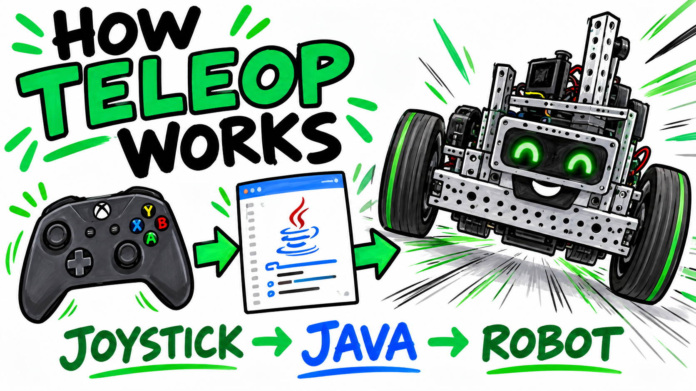
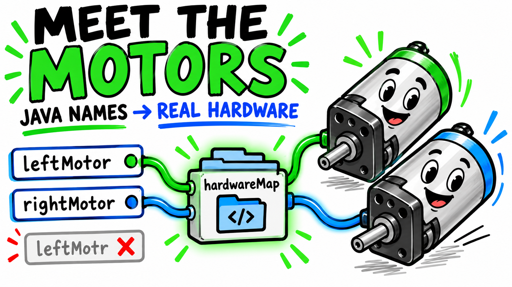
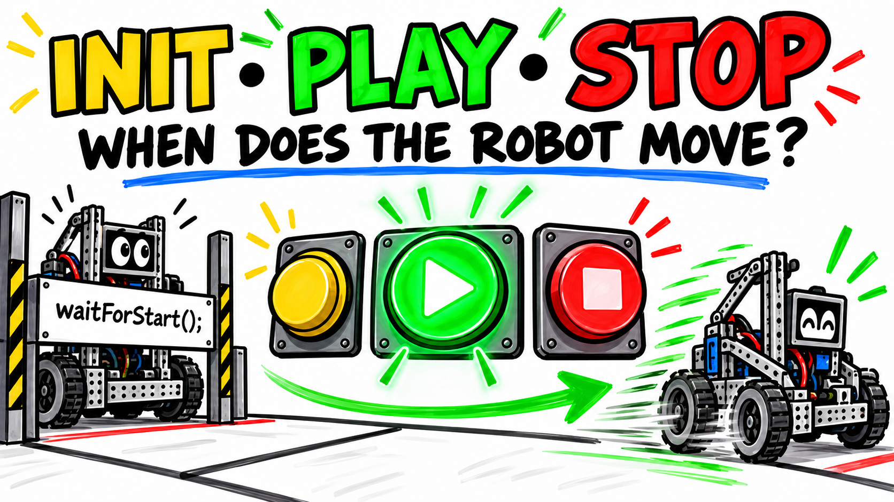
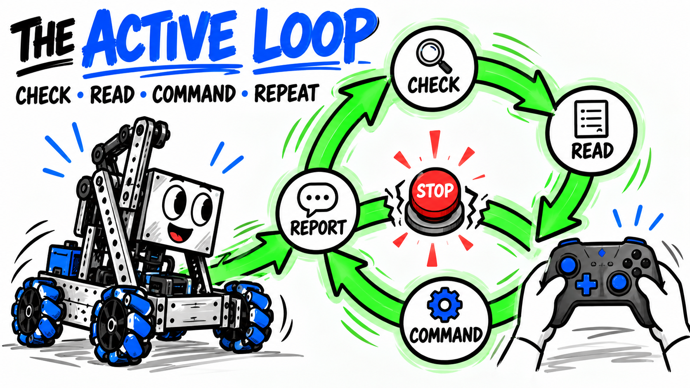
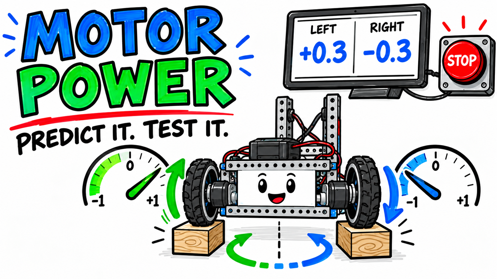
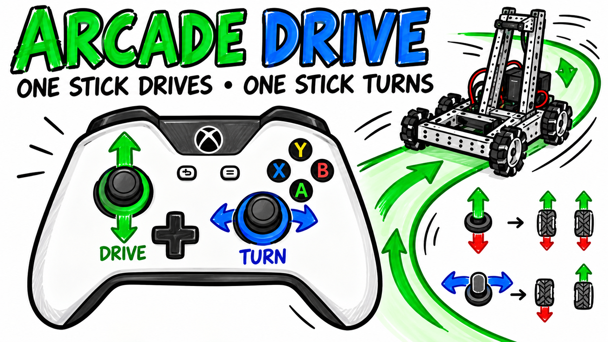
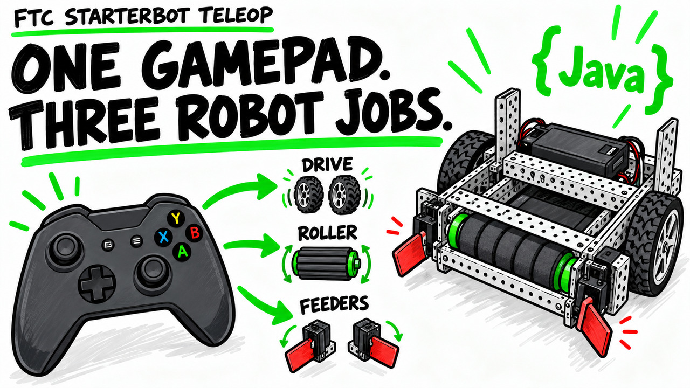

Video 1
How an FTC TeleOp Program Works
Follow program execution from INIT and PLAY through the active loop and STOP.
Open resources →FTC Java · Seven foundations plus an applied capstone
Short whiteboard lessons, teacher materials, Java examples, classroom activities, and printable student workbooks for learning how an FTC TeleOp program controls a robot. Part 8 applies the full sequence to a goBILDA-style StarterBot chassis and intake.

Follow program execution from INIT and PLAY through the active loop and STOP.
Open resources →
Connect Java motor variables to the configured devices on the Robot Controller.
Open resources →
See what runs during initialization and why the program waits before driving.
Open resources →
Trace the repeating cycle that reads controls, commands hardware, and reports results.
Open resources →
Understand gamepad Y values, variables, and why FTC drive code often negates the input.
Open resources →
Predict robot motion from motor power and use telemetry to verify commanded values.
Open resources →
Mix forward and turning inputs into safe left- and right-motor commands.
Open resources →
Connect one gamepad to the drivetrain, intake roller, two feeder servos, and telemetry on a complete StarterBot.
Open resources →